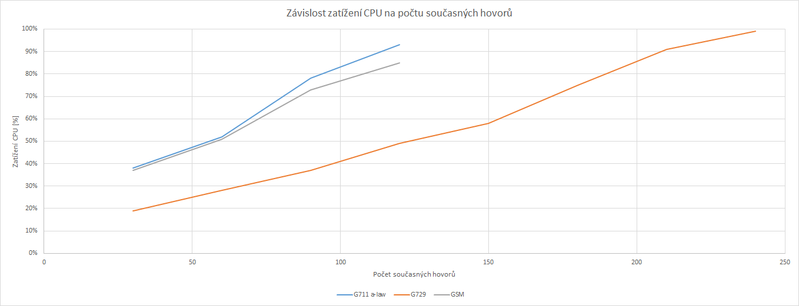
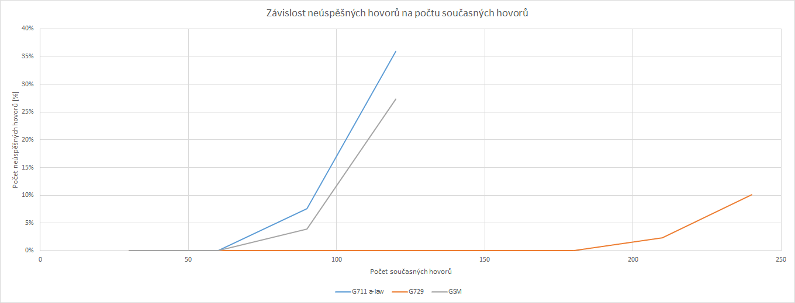
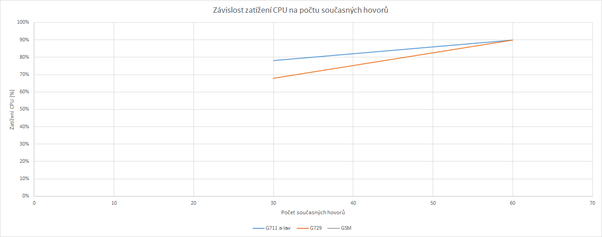
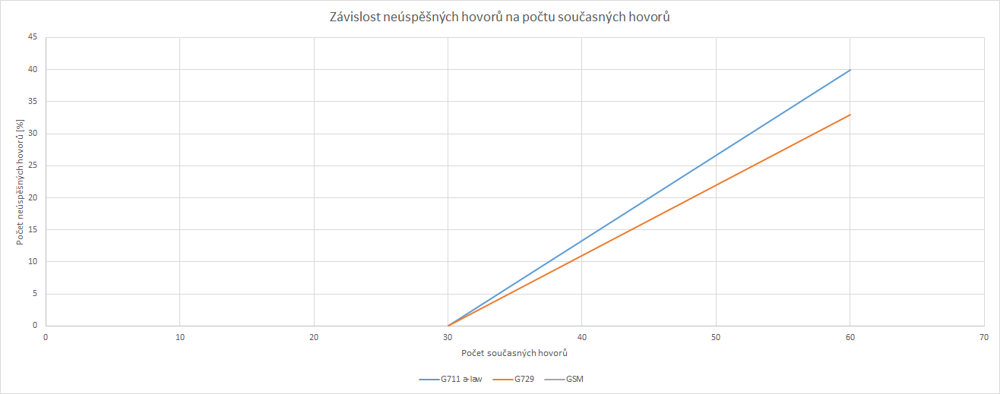

Nejdříve je potřeba doinstalovat prerekvizity:
pi@raspberrypi:~ $ sudo apt-get install libncurses5-dev, uuid-dev, libjansson-dev, libxml2-dev, sqlite3, libsqlite3-dev
Stáhneme aktuální verzi Asterisku:
pi@raspberrypi:~ $ wget http://downloads.asterisk.org/pub/telephony/asterisk/asterisk-14-current.tar.gz
Rozbalíme:
pi@raspberrypi:~ $ tar xvf asterisk-14-current.tar.gz
Zvolíme adresář Asterisk-<aktuální verze>
pi@raspberrypi:~ $ cd asterisk-14.1.2
Před kompilací je potřeba zkontrolovat všechny závislosti (zda jsou nainstalovány všechny potřebné prerekvizity):
pi@raspberrypi:~ $ sudo ./configure
Pokud je vše v pořádku je potřeba Asterisk zkompilovat a nainstalovat:
pi@raspberrypi:~ $ sudo make menuselect
pi@raspberrypi:~ $sudo make
pi@raspberrypi:~ $sudo make install
pi@raspberrypi:~ $sudo make samples
Konfigurace Asterisku
Konfigurační soubor SIPovských uživatelských účtů Asterisku je umístěn v: /etc/asterisk/sip.conf
[general]
port=5060
bindaddr=0.0.0.0
transport=udp
[10000]
type=friend
context=test
host=192.168.1.25
secret=uac
canreinvite=no
disallow=all
allow=all
qualify=no
.
.
.
[50000]
type=friend
context=test
host=192.168.1.26
secret=uas
canreinvite=no
disallow=all
allow=all
qualify=no
Dále je potřeba nastavit „dial plan“ v souboru extensions.conf, který se nachází v /etc/asterisk/extensions.conf
[test]
exten => _[1-9]XXXX,1,Dial(SIP/${EXTEN},25)
Nejdříve je potřeba doinstalovat prerekvizity:
pi@raspberrypi:~ $ sudo apt-get install ncurses-dev openssl g++ gcc libssl-dev libpcap-dev libnet1-dev
Stáhneme aktuální verzi SIPp:
pi@raspberrypi:~ $ wget https://github.com/SIPp/sipp/releases/download/v3.5.1/sipp-3.5.1.tar.gz
Rozbalíme:
pi@raspberrypi:~ $ tar xvf sipp-3.5.1.tar.gz
Zvolíme adresář SIPp-<aktuální verze>
pi@raspberrypi:~ $ cd sipp-3.5.1
Před kompilací je potřeba zkontrolovat všechny závislosti (zda jsou nainstalovány všechny potřebné prerekvizity):
pi@raspberrypi:~ $ sudo ./configure --with-pcap --with-openssl
pi@raspberrypi:~ $sudo make
pi@raspberrypi:~ $sudo make install
V přiložených schématech se mění parametr RTP/AVP <#> a parametr rtpmap dle tabulky níže.
| Kodek | RTP/AVP | rtpmap |
| G.711 a-law | 8 | PCMA |
| G.729 | 18 | G729 |
| GSM | 3 | GSM |
XML schémata pro stranu UAC a UAS:
Hlasové vzorky pro RTP stream:
Sekvenční soubor proměnných:
Spuštění klienta UAC
Spustíme příkazem:
lukas@mujpc:~Desktop/sipp-3.5.1$ sudo ./sipp -sf uac_asterisk.xml -i 192.168.1.25 -p 5060 -inf asterisk.csv -m 3600 -r 4 -mp 7000 192.168.1.19
| Parametr | Hodnota | Popis |
| -sf | uac_asterisk.xml | Scenario file |
| -i | 192.168.1.25 | IP adresa klienta |
| -p | 5060 | Port pro naslouchání klienta |
| -inf | asterisk.csv | Vstupní hodnoty pro testování |
| -m | 3600 | Maximální počet uskutečněných hovorů |
| -r | 4 | Počet vygenerovaných hovorů za sekundu |
| -mp | 7000 | Zdrojový port pro RTP |
Tímto příkazem, SIPp v modu UAC s adresou 192.168.1.25 na portu 5060 se vstupními hodnotami ze souboru asterisk.csv generuje každou sekundu 4 hovory, do celkového počtu 3600 na PBX s adresou 192.168.1.19.
Spuštění serveru UAS
Spustíme příkazem:
martin@mujpc: ~Desktop/sipp-3.5.1$ sudo ./sipp -sf uas_asterisk.xml -i 192.168.1.26 -p 5060 -rtp_echo
| Parametr | Hodnota | Popis |
| -sf | uas_asterisk.xml | Scenario file |
| -i | 192.168.1.26 | IP adresa serveru |
| -p | 5060 | Port pro naslouochání serveru |
| -rtp_echo | - | Odpověď na RTP zprávy |
Tímto příkazem, SIPp v modu UAS s adresou 192.168.1.26 na portu 5060, začne generovat odpovědi na RTP zprávy.
| Kodek | Průměrné vytížení CPU | Průměrné vytížení RAM | Load [1;5;15] | Počet současných hovorů | Počet neůspěšných hovorů | Hovorů celkem |
| G711 a-law | 38% | 134 | 0,10; 0,27; 0,25 | 30 | 0 (0 %) | 900 |
| 52% | 139 | 0,41; 0,42; 0,40 | 60 | 1 (0 %) | 1800 |
| 78% | 146 | 2,20; 1,72; 1,05 | 90 | 204 (8 %) | 2700 |
| 93% | 163 | 1,77; 2,27; 1,32 | 120 | 1293 (36 %) | 3600 |
| Kodek | Průměrné vytížení CPU | Průměrné vytížení RAM | Load [1;5;15] | Počet současných hovorů | Počet neůspěšných hovorů | Hovorů celkem |
| G729 | 19% | 131 | 0,14; 0,22; 0,16 | 30 | 0 (0 %) | 900 |
| 28% | 131 | 0,29; 0,37; 0,22 | 60 | 0 (0 %) | 1800 |
| 37% | 134 | 0,40; 0,46; 0,32 | 90 | 0 (0 %) | 2700 |
| 49% | 140 | 0,64; 0,57; 0,36 | 120 | 0 (0 %) | 3600 |
| 58% | 149 | 0,78; 0,80; 0,53 | 150 | 0 (0 %) | 4500 |
| 75% | 162 | 0,98; 0,97; 0,70 | 180 | 2 (0 %) | 5400 |
| 91% | 180 | 1,29 1,36; 0,96 | 210 | 147 (2 %) | 6300 |
| 99% | 192 | 1,78; 1,53; 1,20 | 240 | 729 (10 %) | 7200 |
| Kodek | Průměrné vytížení CPU | Průměrné vytížení RAM | Load [1;5;15] | Počet současných hovorů | Počet neůspěšných hovorů | Hovorů celkem |
| GSM | 37% | 130 | 0,34; 0,37; 0,26 | 30 | 0 (0 %) | 900 |
| 51% | 136 | 0,46; 0,53; 0,45 | 60 | 0 (0 %) | 1800 |
| 73% | 143 | 0,78; 1,32; 0,77 | 90 | 107 (4 %) | 2700 |
| 85% | 153 | 0,83; 1,20; 0,81 | 120 | 983 (27 %) | 3600 |
| Kodek | Průměrné vytížení CPU | Průměrné vytížení RAM | Load [1;5;15] | Počet současných hovorů | Počet neůspěšných hovorů | Hovorů celkem |
| G711 a-law | 78% | 133 | 4,31; 5,67; 5,60 | 30 | 0 (0 %) | 900 |
| 90% | 136 | 9,41; 9,38; 8,93 | 60 | 730 (41 %) | 1800 |
| Kodek | Průměrné vytížení CPU | Průměrné vytížení RAM | Load [1;5;15] | Počet současných hovorů | Počet neůspěšných hovorů | Hovorů celkem |
| G729 | 68% | 131 | 10,30; 9,64; 3,32 | 30 | 0 (0 %) | 900 |
| 90% | 132 | 10,80; 11,34; 11,20 | 60 | 597 (33 %) | 1800 |
| Kodek | Průměrné vytížení CPU | Průměrné vytížení RAM | Load [1;5;15] | Počet současných hovorů | Počet neůspěšných hovorů | Hovorů celkem |
| GSM | 91% | 130 | 26,05; 22,78; 14,89 | 30 | 229 (25 %) | 900 |
|
Závislost zatížení CPU na počtu hovorů

Závislost neúspěšných hovorů na počtu současných hovorů

Pro porovnání RPI v1
Závislost zatížení CPU na počtu hovorů

Závislost neúspěšných hovorů na počtu současných hovorů
